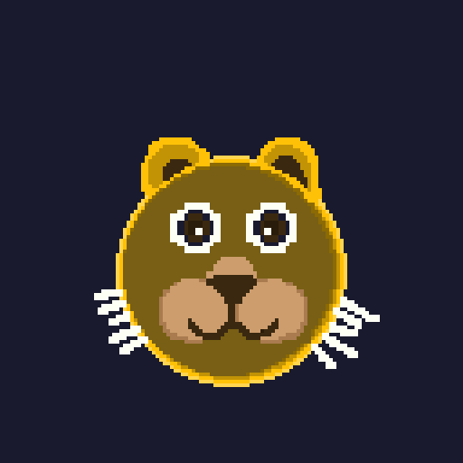
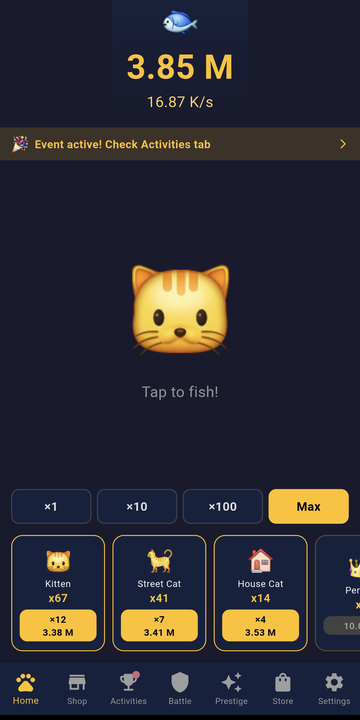
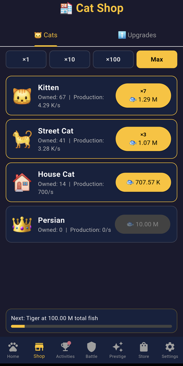
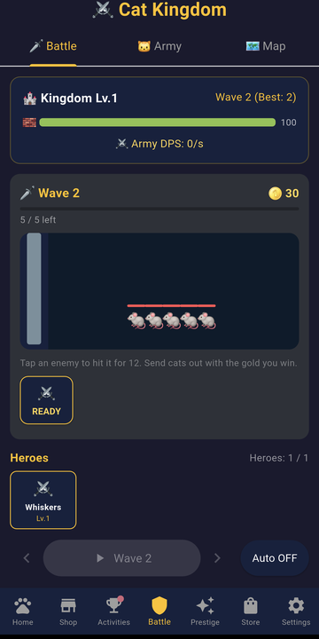

Infinite Cats
The cats fish for you.
Catch fish. Buy cats. The cats fish for you. Then buy more cats.
Infinite Cats is an idle game about a very small empire that gets extremely large. Tap to catch
your first fish, hire a cat to do it for you, and keep going until the numbers stop fitting on the
screen — the tiers never run out, because each one is generated rather than picked off a list.



What you do with the fish
- Endless cat tiers. Every tier produces a hundred times the last one, and the
cost climbs to match. There is no final cat.
- Buy in bulk — x1, x10, x100 or Max — with a bar showing what the next unlock
costs, so you always know what you are saving for.
- Cross a milestone and the whole tier doubles, unlocking the upgrade that was
waiting behind it.
- Ascend when you have gone as far as you can. You lose the cats and keep a
permanent multiplier, and the next run is faster than the last.
Defend the kingdom
- A lane battle that runs while you idle. Garrison cats hold the line, the tower fires when you
tap, and sorties spend battle gold for a push.
- 10 soldier types and 5 heroes, each with an ability on a cooldown. Heroes are pressed into a
loadout, not collected — you choose who fights.
- 13 territories to besiege. A siege stays open until you take it.
And when you want a break
- Mini-games for a burst of fish.
- Daily bonus, quests, and 26 achievements.
- 6 themes.
- Your cats keep fishing while the app is closed. Come back to a full net.
Honest about the ads
Video ads are opt-in: you watch one only when you choose a bonus that offers it, and refusing
costs you nothing but the bonus. There is a one-time purchase that removes the banner if you would
rather not see it at all.
Plays offline. English and French. No account, no login, no sign-up.
Not released yet. Infinite Cats is in closed testing on Google
Play. This page will carry the store link the day it goes live.